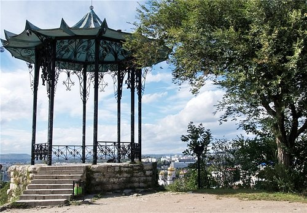

Горная вершина, откуда открывается панорамный вид на город и окрестности.
Часы работы: круглосуточно Билеты: подъем на канатной дороге ~300 руб. Адрес: центр города
Минеральные источники
Знаменитые лечебные воды, доступные в бюветах и источниках.
Часы работы: 8:00 - 20:00 Билеты: бесплатно Адрес: парк «Цветник»
Парк Цветник
Исторический парк с клумбами, скульптурами и кафе, место отдыха горожан.
Часы работы: 8:00 - 22:00 Билеты: бесплатно Адрес: ул. Буачидзе, центр
Лермонтовские места
Места, связанные с жизнью и творчеством М.Ю. Лермонтова (дом-музей, памятник).
Часы работы: 10:00 - 18:00 Билеты: от 100 руб. Адрес: Лермонтовская ул.
Канатная дорога
Живописный подъем на гору Машук по канатной дороге.
Часы работы: 9:00 - 20:00 Билеты: ~300 руб. Адрес: у подножия Машука
Спуск к провалу
Загадочный спуск в глубь горы, к воде со специфичным запахом, так как Родник насыщен сероводородом.
Часы работы: 10:00 - 18:00 Билеты бесплатно. Адрес:Бульвар.Гагарина
Театр Оперетты
Ставропольский государственный краевой театр оперетты — российский театр оперетты, расположенный в городе Пятигорск Ставропольского края. Основан 10 марта 1939 году как Пятигорский театр музыкальной комедии, нынешнее своё название театр получил в 1997 году.
с 10:00 до 19:00 без выходных. Билеты от 200 до 800 рублей. Проспект Кирова 17.
Эолова Арфа
Это памятник архитектуры, созданный в 1830-1831 годах. Здесь гулял М.Ю. Лермонтов, который упоминает беседку в своем творчестве.
Часы работы: 10:00 - 22:00 Билеты бесплатно. Адрес: Емануелевский парк

Китайская Беседка
Одна из главных и любимых туристических достопримечательностей и локаций для отдыха местных жителей Пятигорска. Расположена она на территории старинного парка «Цветник»
с 10:00 до 22:00. Бесплатно Емануелевский парк.
Оптимальный маршрут
Укажите ваши предпочтения, и мы предложим вам оптимальный маршрут для знакомства с Пятигорском.

.webp)
.webp)
.webp)